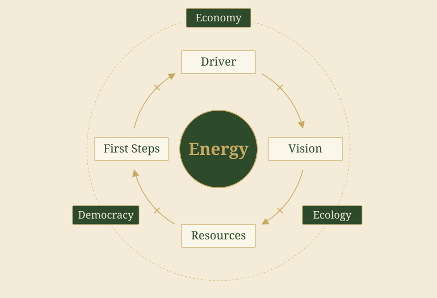
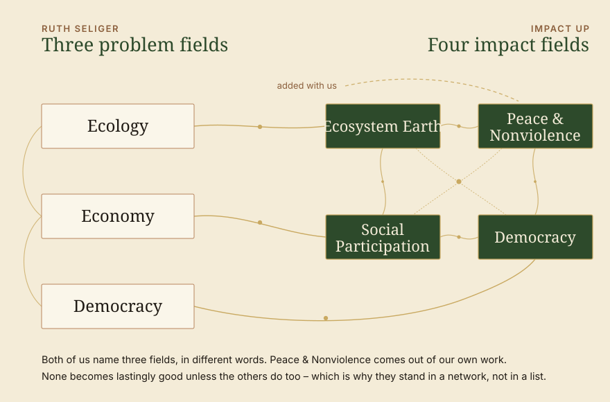
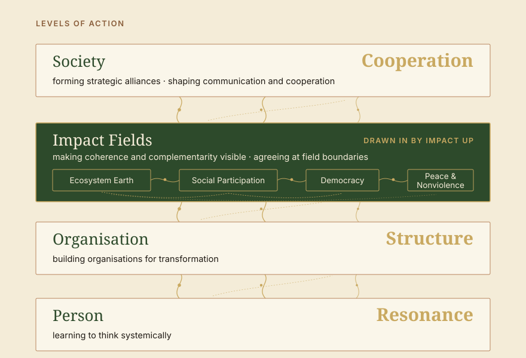

Impulse · How do we truly become effective
The book Systemische Beratung der Gesellschaft. Strategien für die Transformation by Ruth Seliger has inspired us. Ruth Seliger comes from systemic organisational development and wants to improve society. That is an important approach of our institute: where impact is to be achieved, society should be improved as well. And just like Seliger, we want to work systemically with society. A check on how Seliger's ideas fit with ours: Impact Up's systemic approach to consulting put to the test.

How the book is built
First the lens, then the process.
How do you get from an analysis of society to a strategy? And how do we truly become effective? As a systemic organisational developer from Vienna, Ruth Seliger applies her consulting experience to society. A rewarding read, because she arrives at many of the same thoughts we are pursuing here. A few thoughts, a few ideas and, of course, a few parallels to Impact Up: you will find them here.
Ruth Seliger is a systemic consultant, and the book begins where she comes from. For some fifty pages she lays the groundwork: models of change – the technical, the dialectical, the systemic concept. Then the clarification of context, with the question of whether society can be read as a client system. Then problem description and contracting, the things that stand at the beginning of any consulting process. This is where the real work of translation lies: craft that has long been at home in systemic consulting is lifted onto a level where nobody issues a contract.
One observation carries this groundwork. Society can be observed – and whoever observes it remains part of it. There is no point outside from which the situation could be viewed neutrally. Anyone working with this is working on a system in which they themselves appear.
At the end of this groundwork stands the strategy compass with the change formula, and only then does the main part begin: the strategy process along driver, vision, resources and first steps. It is there, with the driver, that the survey of the situation sits as well – economy, ecology, democracy. It is unvarnished. A society is heading into difficult times, and nobody pretends this could be turned around with good intentions. That is realism, and it is exactly why what follows holds.
At the end stands, as the blurb puts it, a set of instruments for transformation: “a treasure chest of systemic theory, models, concepts and instruments for shaping strategies on the way from analysis to vision” (Ruth Simsa, Vienna).


Co-creating energy
Society has no management.
That society has no management is a good thing and part of what a democracy is, but it does make some things demanding, especially when you look through the lens of organisational development. Anyone who has ever tried to bring a topic “into society” knows the feeling behind it – you write, you build networks, you argue, and still you reach into empty space, because there is no office in charge. There is no counterpart to issue a contract, and none to carry it out.
If there is no centre, what counts is what emerges between those involved. That is why alliances, societal communication and cooperation stand at the heart of Seliger's strategies for the societal level. A compass that supports along the way: first the drivers, then the vision, then the resources, then the first steps. What comes of this comes about between people – and that is why this is about energy.
Driver × Vision × Resources × First Steps = Energy

Seliger establishes this change formula as a strategy compass. She names the elements that generate the energy – the force from which movement arises in the first place. What matters is the multiplication sign: the four elements are multiplied. If one falls to zero, the whole movement falls. Whoever has forgotten what they originally wanted to get away from will not get far even with the best vision. Whoever no longer sees their own resources grows tired, however clear the next step may be.
The whole main part runs along these four elements. “Why?” With the driver comes urgency, and with it the situation in economy, ecology and democracy. “Where to?” With the vision Seliger separates carefully: utopias express longing and may stay out of reach, visions sketch a future it is actually possible to move into, and goals break them down into something workable. “With what?” With the resources it turns into a treasure hunt – what resources do we have, what can we build on? “How?” With the first steps, interventions happen on three levels at once.
At the end of this calculation stands energy – transformation energy, the energy of change. And it is intriguing that what must be meant here is a kind of social energy: energy that arises between people. It keeps collaboration going, and it is the reason why cooperation needs more than a good plan. In societal transformation, what counts is less the plans that add up and more the energy that carries.
Where we find Impact Up again
Three fields of urgency, four fields of impact

Our impact fields came about independently of this book, out of the work itself, out of people and resonance. All the better to see how close they lie: Seliger's ecology is our Ecosystem Earth, her economy sits close to Social Participation, and for democracy we use the same word.
With her they stand as problem fields, with the driver, and that is coherent: urgency comes from there. We call the same fields impact fields, because we need them as a place where organisations coordinate with one another. Two directions of view on the same object – one asks what we want to get away from, the other where we meet.
What comes in addition with us is Peace & Nonviolence. Positive peace means more than the absence of war – freedom from discrimination, from structural and cultural violence. That logic reaches into the other fields, and with Seliger it is closely tied to the problems of democracy. Thinking it along carries its own weight for us, because people only come along where they are not passed over, and because there is so much method in it for cooperation and mutual understanding.
What both of us see unchanged is the close networking and the many claims of connection between the fields: none of these fields becomes lastingly good without the others becoming similarly good. Anyone who wants to reduce climate change, for instance, has to think climate justice – that is, social participation – along with it. Economic participation does not seriously work without democracy, otherwise it is care instead of participation. That is why with both of us the fields stand in a network and not in a list.
Where we add something
Between organisation and society.
With the first steps, Seliger distinguishes three levels of action. On the level of the person: learning to think systemically. On the level of the organisation: organising societal transformation. On the level of society: forming strategic alliances, shaping communication and cooperation. That cooperation stands right at the end there was a pleasure to find – with us it stands in the same place. Cooperation is central for our society, cooperation is the central concept of transformation. We approach the same concepts by way of perspectives, and first look, in reflection, for the resonances, structures and cooperations that lead to impact.
The organisation lies between person and society. For Seliger it is the central place where transformation can be organised. The system logic of organisations is “that communication in a society can be ordered – organised – shaped. They serve to structure functional subsystems of society.” The structures within organisations are for us the central possibility of shaping impact outwards.

Our four perspectives on impact: person with resonance, organisation with structure, the networked impact fields drawn in between, society with cooperation on top.
Between the single organisation and society as a whole, impact fields are a further working level, because on this level, as we believe, a certain coherence and complementarity between the different impacts is needed. This working level is for us the level on which impacts first arrive on the outside and where connectivity is required. What for Seliger are functional subsystems of society we call fields – because fields are something we can set context-specifically on the working level and use as a first step on the way into society, to check impacts for coherence and complementarity.
This is why we speak of field boundaries rather than system boundaries: at a field you can make concrete arrangements. It is about coherence and complementarity, that is, about whether the impacts of different organisations support or cancel one another. The four large fields are only the entry point. They grow finer by themselves as soon as you work with them: neighbourhood fields, topic fields – enough housing for everyone, healthy food, sufficient medical care.
What we take from the book into our work
Two things that keep working with us.
Make resources visible first. The familiar movement starts from the deficit – analyse the problem, break down the causes, derive measures. That produces clean applications and exhausted people, because the energy comes out of the lack. The question of what is already there, and who is already working on it, turns the direction around.
Look at the energy, not only at the plan. When a collaboration stalls, it is rarely the concept that is missing. Mostly the energy stalls on missing resources, visions, drivers, or on knowing how to take the next step. A good, whole view of the problems in a project.
We would like to recommend the book to you. If you want to change society, it helps in many respects. You will find plenty of questions and methods for where to start in transforming elements of society. And of course you can also get in touch with us and take things on together: through impact fields as a place of coordination, with support in the process, with people sitting with the same questions. What stays longest from the reading is in any case neither model nor formula, but an attitude: that we can shape our future – not really steer it, but begin together and shape things.
Among other things, Ruth Seliger also discusses the leadership of the organisation towards the end of the book, and we are already curious – leadership is her long-standing field, and her Dschungelbuch der Führung is already waiting here.
→ Systemic Impact Orientation → Our Impact Fields
Sources
- Seliger, R.: Systemische Beratung der Gesellschaft. Strategien für die Transformation. Carl-Auer, Heidelberg, 1st edition 2022.
- Seliger, R.: Das Dschungelbuch der Führung. Ein Navigationssystem für Führungskräfte. Carl-Auer.
- Rosa, H.: Resonanz und soziale Energie. Über Schlüsselbegriffe der Kritischen Theorie. Ed. by Michael Kühnlein. Reclam, Ditzingen, 2026.Two essays in which Rosa connects social energy to his theory of resonance.